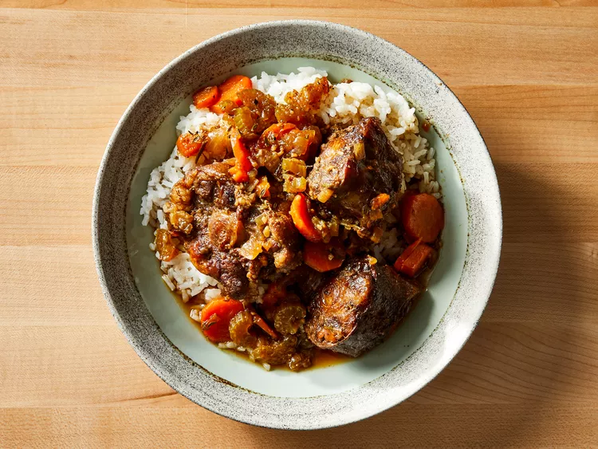

Jamaican Oxtails Recipe

Description
This is a paragraph describing the recipe.
Ingredients
Note: these are ingredients for 1 serving
- 2 1/2 pounds oxtail
- 1 tablespoon soy sauce
- 1 tablespoon Worcestershire sauce
- 1 tablespoon salt
- 1 tablespoon white sugar
- 1 tablespoon garlic and herb seasoning (such as Spike®)
- 1 teaspoon browning sauce (such as Grace®)
- 1/4 teaspoon ground paprika
- 1/4 teaspoon ground cayenne pepper
- 1/4 teaspoon ground black pepper
- 2 carrots, thinly sliced
- 2 stalks celery, thinly sliced
- 1 onion, chopped
- 4 garlic cloves, minced
- 3 cups low-sodium beef broth
- 1 bunch fresh thyme
- 1 sprig fresh rosemary
- 1 bay leaf
- 2 tablespoons unsalted butter
Steps
- Place oxtail in a shallow dish. Combine soy sauce, Worcestershire sauce,
salt, sugar, garlic and herb seasoning, browning sauce, paprika, cayenne
pepper, and black pepper together in a small bowl. Rub both sides of oxtail
with soy sauce mixture; discard any excess.
- Heat vegetable oil in a large, deep skillet over medium-high heat.
Sear oxtail in hot oil until golden brown, about 3 minutes per side;
transfer to a plate and set aside.
-
Sauté carrots, celery, onion, and garlic in the same skillet until
softened, about 5 minutes. Add beef broth, thyme, rosemary, and bay
leaf; bring to a boil. Add oxtail, with its juices, and butter.
Reduce heat to low, cover, and simmer until oxtail is fork tender,
about 3 hours.
-
Uncover skillet and increase heat to high. Cook, stirring occasionally,
until sauce reduces and thickens, about 5 minutes.
Can also be found on here on AllRecipes
Home